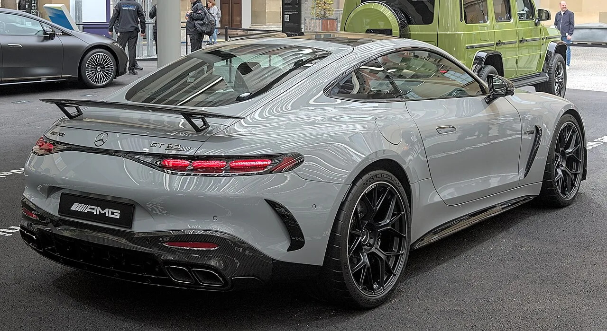
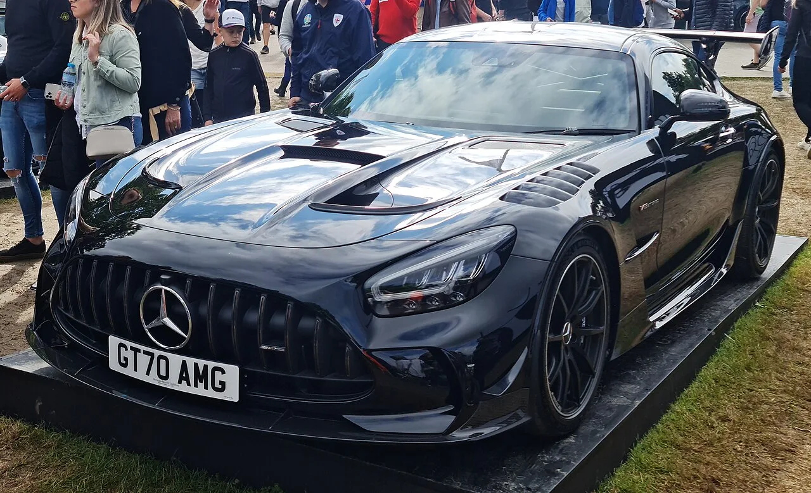
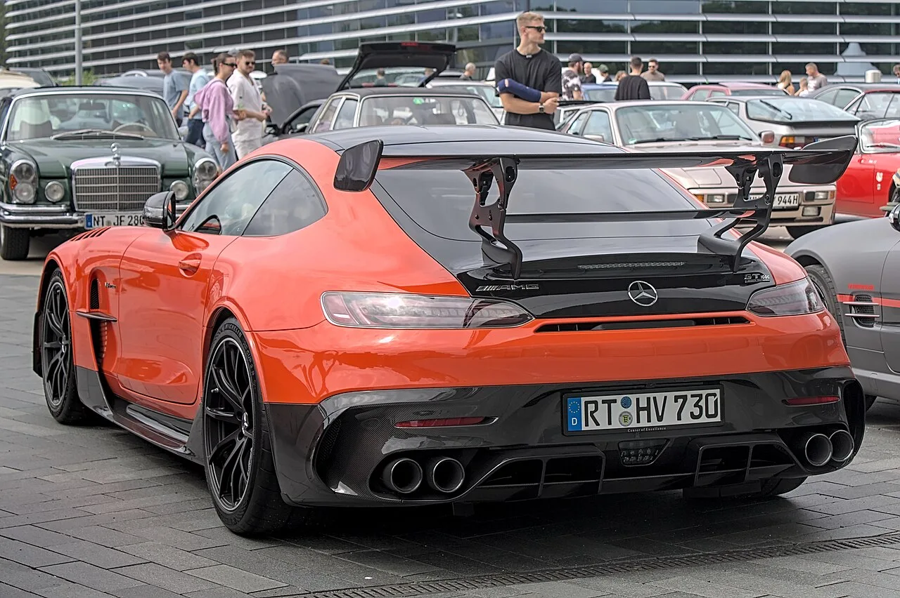

▲ 현행 AMG GT 63 프로. 새 블랙 시리즈는 이보다 위에 자리한다
메르세데스-AMG가 새 GT 블랙 시리즈를 준비 중입니다. 올라 켈레니우스 CEO가 직접 확인했습니다.
핵심은 엔진입니다. 플랫플레인 크랭크 V8이고, 차세대 GT3 레이스카와 구조를 공유합니다.
다만 출력도 토크도 엔진 코드도 공개되지 않았습니다. 현재 알려진 것은 방향뿐입니다.
1. 플랫플레인 크랭크가 뭐가 다른가
이 소식의 전부는 크랭크샤프트 구조에 있습니다. 여기부터 짚어야 합니다.
V8 엔진의 크랭크샤프트는 크게 두 가지입니다.
⚙️ V8 크랭크샤프트 두 가지 구조
- 크로스플레인(cross-plane) — 크랭크핀이 90도 간격으로 배치. 미국식 머슬카와 대부분의 AMG V8이 쓰는 방식. 무겁고 낮은 배기음, 저회전 토크에 유리
- 플랫플레인(flat-plane) — 크랭크핀이 180도 간격. 페라리·포르쉐 레이스카가 쓰는 방식. 고회전에 유리하고 배기음이 높고 날카로움
플랫플레인은 회전 관성이 작아 엔진이 빠르게 돌고, 배기 흐름이 균등해집니다. 그 결과 레드존을 훨씬 위로 올릴 수 있습니다.
대신 단점도 분명합니다. 2차 진동이 크게 발생합니다. 크로스플레인이 상쇄해주던 진동을 잡을 방법이 마땅치 않아, 일상 주행에서 거칠게 느껴집니다.
AMG가 이 구조를 택했다는 것은 승차감보다 회전 특성을 우선했다는 뜻입니다.
2. "GT3의 도로용 쌍둥이"라는 표현
켈레니우스 CEO는 이 프로젝트를 차세대 GT3 레이스카의 "도로용 쌍둥이(road-legal twin)"라고 표현했습니다.
GT3는 전 세계 내구 레이스에서 가장 널리 쓰이는 규정입니다. 뉘르부르크링 24시, 스파 24시, 데이토나 등이 이 클래스를 운영합니다.
레이스카와 양산차가 엔진 구조를 공유한다는 것은 단순한 마케팅 문구가 아닙니다. GT3 규정은 양산차 기반을 요구하기 때문에, 애초에 함께 개발하는 편이 유리합니다.
켈레니우스는 이 프로젝트에 대해 "완전히 다르다", "미친 짓"이라는 표현도 썼습니다. 기존 AMG V8의 연장선이 아니라는 신호입니다.

▲ AMG GT 63 프로. 새 블랙 시리즈는 이 차 위에 놓인다
3. 출력은 얼마나 될까 — 전부 추정
여기서부터는 확정된 것이 하나도 없습니다.
기준이 되는 것은 현행 AMG GT 63 프로입니다. 603마력, 850Nm입니다. 새 블랙 시리즈는 이 차 위에 놓이므로 출력과 토크 모두 이를 넘어설 것으로 예상됩니다.
다만 AMG는 어떤 숫자도 발표하지 않았습니다. 엔진 코드조차 공개되지 않았습니다.
참고로 이전 AMG GT 블랙 시리즈(2020)는 플랫플레인 크랭크를 쓴 4.0리터 트윈터보 V8로 720마력을 냈습니다. AMG가 플랫플레인을 처음 시도한 것은 아닙니다.

▲ 2020년형 AMG GT 블랙 시리즈. 이미 플랫플레인 크랭크 V8을 썼다
4. 블랙 시리즈라는 이름의 무게
블랙 시리즈는 2006년부터 이어진 AMG의 서브 브랜드입니다. 도로에서 탈 수 있는 가장 극단적인 AMG라는 위치를 지켜왔습니다.
특징은 일관됩니다. 거대한 리어윙, 카본 바디 패널, 트랙에 맞춘 서스펜션, 그리고 대폭 끌어올린 출력입니다. 뒷좌석을 들어내는 경우도 흔합니다.
자주 나오는 모델이 아닙니다. 20년 동안 손에 꼽을 정도만 나왔습니다. 그래서 블랙 시리즈라는 이름이 붙는 것 자체가 신호로 읽힙니다.

▲ 블랙 시리즈의 상징인 거대한 리어윙. 2006년부터 이어진 라인이다
5. 전동화 시대에 새 V8을 만드는 이유
2027년 공개, 2028년 판매가 예상되는 시점에 새 V8을 개발한다는 것은 그 자체로 메시지입니다.
켈레니우스는 고성능 내연기관에 대해 "앞으로도 수년간 필요할 것이다. 특히 스포츠카에서는"이라고 말했습니다.
배경에는 시장 상황이 있습니다. 고성능 전기차 수요가 예상만큼 빠르게 늘지 않았습니다. 포르쉐 타이칸만 해도 2023년 4만629대에서 2025년 1만6,339대로 내려앉았습니다. 반대로 내연기관 고성능 모델은 단종을 앞두고 오히려 주목받는 흐름이 나타나고 있습니다.
메르세데스는 이 상황에서 양쪽을 병행하는 쪽을 택했습니다. 전동화를 이어가면서 고성능 V8도 새로 만드는 것입니다. BMW가 iX5 M과 내연기관 X5 M을 동시에 준비하는 것과 같은 구도입니다.
6. 정리 — 확정된 것은 방향뿐
확인된 사실은 세 가지입니다. 메르세데스-AMG가 새 GT 블랙 시리즈를 개발 중이고, 엔진은 플랫플레인 크랭크 V8이며, 차세대 GT3 레이스카와 구조를 공유한다는 것입니다.
미확정도 분명히 해두겠습니다. 출력·토크·엔진 코드가 전부 미공개입니다. "GT 63 프로(603마력)를 넘을 것"이라는 관측은 매체 추정입니다. 공개 시점(2027년)과 판매 시점(2028년)도 예상치입니다.
그럼에도 이 소식이 의미 있는 이유는 2026년에 새 자연흡기 계열 고회전 V8을 설계하는 브랜드가 거의 없기 때문입니다. AMG가 그 길을 다시 열었다는 사실 자체가 신호입니다.